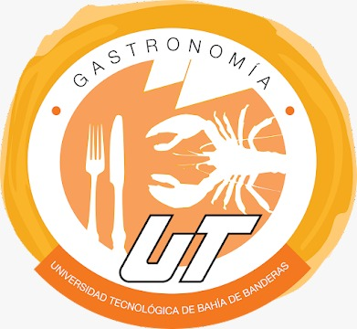
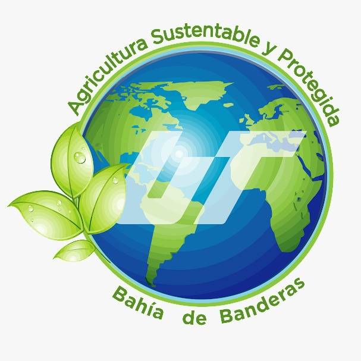
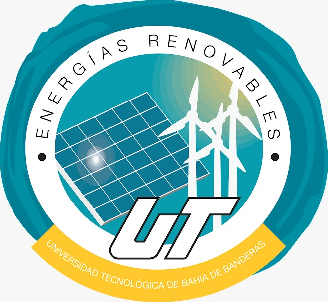
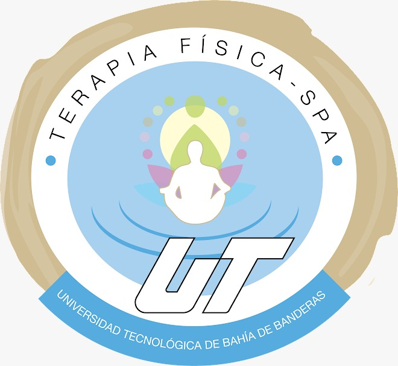
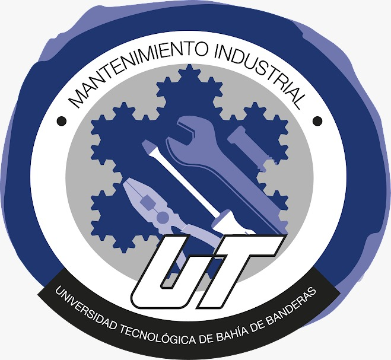
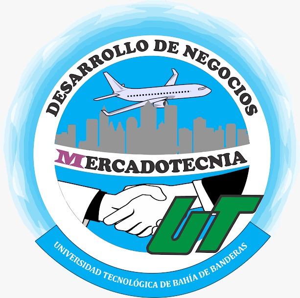

La carrera de Gastronomía en la Universidad Tecnológica de Bahía de Banderas ofrece a los estudiantes una formación integral en el arte culinario y la gestión de servicios gastronómicos. Nuestro programa combina sólidos conocimientos teóricos con prácticas culinarias innovadoras, fomentando la creatividad y el desarrollo de habilidades técnicas en la cocina. Los estudiantes exploran diversas técnicas de preparación, presentación de platillos y gestión de alimentos y bebidas, respaldados por un cuerpo docente experimentado y laboratorios equipados con tecnología de punta. Además, se enfatiza la importancia de la sostenibilidad, la seguridad alimentaria y el emprendimiento en el contexto de la industria gastronómica actual. Al graduarse, nuestros estudiantes están preparados para destacar en el exigente y apasionante mundo de la gastronomía, ya sea como chefs innovadores, emprendedores gastronómicos o profesionales en la gestión de servicios alimenticios.

Agricultura
La carrera de Agricultura en la Universidad Tecnológica de Bahía de Banderas ofrece una formación integral en técnicas agrícolas modernas y sostenibles, preparando a los estudiantes para enfrentar los desafíos del sector agropecuario actual. Nuestro programa combina conocimientos teóricos y prácticos en áreas como manejo de cultivos, tecnologías agrícolas innovadoras, gestión ambiental, uso eficiente de recursos hídricos y desarrollo rural. Con un enfoque interdisciplinario y orientado al mercado laboral, nuestros egresados están capacitados para contribuir al crecimiento y la sustentabilidad del sector agrícola, promoviendo prácticas responsables y soluciones innovadoras para los retos del campo.

Energias Renobables
La carrera de Agricultura en la Universidad Tecnológica de Bahía de Banderas ofrece una formación integral en técnicas agrícolas modernas y sostenibles, preparando a los estudiantes para enfrentar los desafíos del sector agropecuario actual. Nuestro programa combina conocimientos teóricos y prácticos en áreas como manejo de cultivos, tecnologías agrícolas innovadoras, gestión ambiental, uso eficiente de recursos hídricos y desarrollo rural. Con un enfoque interdisciplinario y orientado al mercado laboral, nuestros egresados están capacitados para contribuir al crecimiento y la sustentabilidad del sector agrícola, promoviendo prácticas responsables y soluciones innovadoras para los retos del campo.

Terapia Fisica
La carrera de Terapia Física en la Universidad Tecnológica de Bahía de Banderas ofrece una formación integral en el campo de la rehabilitación y el bienestar físico. Nuestro programa combina conocimientos teóricos sólidos con una amplia experiencia práctica en diversas áreas de la terapia física, incluyendo ortopedia, neurología, pediatría y geriatría. Los estudiantes reciben una educación de vanguardia impartida por profesionales altamente calificados, con acceso a instalaciones modernas y tecnología de punta para desarrollar habilidades terapéuticas efectivas. Además, fomentamos valores éticos y humanísticos en nuestros estudiantes, preparándolos para desempeñarse con excelencia y empatía en su labor profesional, contribuyendo así al bienestar y la calidad de vida de las personas.

Mantenimiento Industrial
La carrera de Mantenimiento Industrial en la Universidad Tecnológica de Bahía de Banderas ofrece una formación integral en áreas clave como electromecánica, automatización, gestión de mantenimiento y seguridad industrial. Nuestro programa combina sólidos fundamentos teóricos con prácticas en laboratorios equipados con tecnología de vanguardia, preparando a nuestros estudiantes para enfrentar los desafíos actuales de la industria. Además, fomentamos el desarrollo de habilidades de liderazgo, trabajo en equipo y resolución de problemas, garantizando que nuestros egresados sean profesionales altamente capacitados y adaptados a las demandas del mercado laboral en el sector industrial.

Mercadotectnia
Claro, aquí te dejo un párrafo sobre la carrera de mercadotecnia en la Universidad Tecnológica de Bahía de Banderas:
La carrera de Mercadotecnia en la Universidad Tecnológica de Bahía de Banderas ofrece a los estudiantes una formación integral en estrategias de marketing, investigación de mercado, gestión de marcas y comunicación efectiva. Los estudiantes tienen la oportunidad de desarrollar habilidades en análisis de tendencias, uso de herramientas tecnológicas para el marketing digital, y diseño de estrategias innovadoras para la promoción y venta de productos y servicios. Además, la universidad promueve experiencias prácticas a través de proyectos reales con empresas locales e internacionales, brindando a los estudiantes una visión global y actualizada del campo de la mercadotecnia.

Tecnologias De la Información
La carrera de Tecnología de la Información en la Universidad Tecnológica de Bahía de Banderas ofrece a los estudiantes una formación integral en sistemas y tecnologías de la información. A través de un enfoque práctico y actualizado, los estudiantes adquieren habilidades en desarrollo de software, administración de bases de datos, seguridad informática y gestión de proyectos tecnológicos. Nuestro plan de estudios se encuentra alineado con las demandas del mercado laboral, permitiendo a nuestros egresados incorporarse con éxito en la industria de la tecnología, tanto a nivel nacional como internacional.